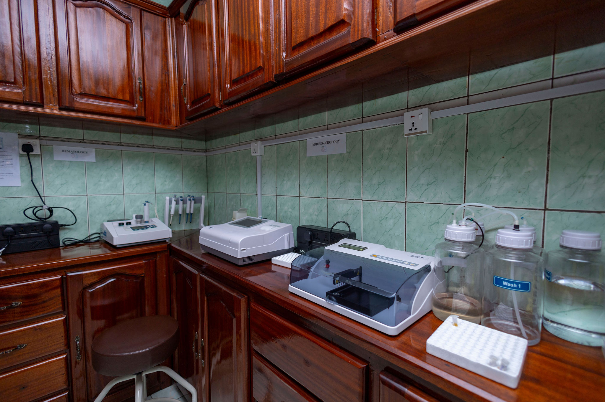
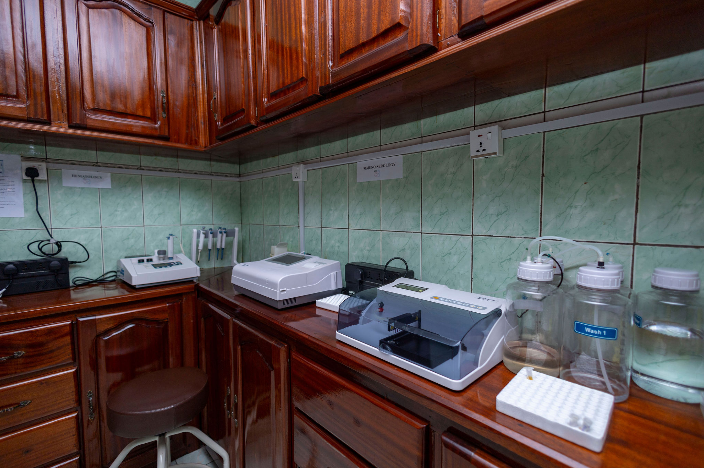

If you've ever dealt with issues like frequent urination, kidney stones, or men's health concerns, you might have wondered who to turn to. That’s where nyarutarama Medical Center comes in.

Benign prostatic hyperplasia (BPH)
is a non-cancerous condition that causes the prostate to enlarge. It's also known
as benign prostatic hypertrophy or enlarged prostate.
learn more

Urinary stone disease (USD) is a condition where stones
form in the urinary
tract. It's also known as kidney stones,
nephrolithiasis, or
urolithiasis.
learn more

Prostate cancer is a type of cancer
that develops in the prostate gland, a small gland in the male reproductive
system. It occurs when cells in the
prostate grow out of control, forming a tumor
learn more

Bladder cancer is a disease that occurs when
cells in the bladder grow abnormally
and form a tumor. The tumor can spread to the
bladder muscle and other organs.
learn more

Kidney cancer is a cancer that starts in the kidney.
It's also known as renal cancer or renal cell carcinoma (RCC).
learn more
Incontinence disease Loss of bladder control, varying from a slight loss of urine after sneezing,
coughing or laughing, to complete inability to control urination.
learn more

Female urology, also known as urogynecology,
is a medical subspecialty that focuses on the diagnosis and treatment of
urinary tract conditions in women
Urodynamics is a set of tests that evaluate how
well the bladder and urethra
store and release urine. It can help identify problems
with the bladder, urethra, and sphincters.
→ Dr Bertin NJINOU NGNINKEU possess in-depth knowledge of the urinary and reproductive systems, allowing him to provide high-quality care for a range of conditions such as kidney stones, bladder issues, and male reproductive health concerns.
→ creating a supportive environment where patients feel comfortable discussing sensitive issues, such as incontinence or sexual health problems. A doctor like Dr. christopher would likely provide compassionate care, ensuring that patients feel heard and respected.
Our mission is to provide high-quality, compassionate care for patients with urological conditions. We aim to diagnose, treat, and manage diseases related to the urinary system and male reproductive system using advanced technology and expert medical staff. We are committed to patient comfort, safety, and education, ensuring everyone receives respectful and personalized care.
The goal of a urological hospital is to diagnose, treat, and manage diseases and problems related to the urinary system and male reproductive organs. This includes conditions like kidney stones, urinary infections, prostate issues, bladder problems, and male infertility. The hospital aims to provide specialized care, improve patients' quality of life, and promote early detection and prevention of urological diseases through expert medical services and advanced technology.
.Use energy-efficient lights and machines.
.Reduce water use during procedures and cleaning.
.Properly dispose of medical waste.
.Recycle where possible.

 



monday-friday: 08:00-18:00
saturday: 09:00-15:00
Sunday: On appointment
info@nmc-rw.com
+250791504912

The entire team was kind, attentive, and professional. The doctor was knowledgeable and took the time to explain everything in detail, making sure I felt comfortable and informed. The clinic itself was clean and well-maintained, and appointment process was smooth and efficient. I truly appreciate the care and attention I received and will definitely be returning for future visits. Highly recommend!

"I had an excellent experience at NYARUTARAMA MEDICAL CENTER. The staff was friendly, rofessional, and made me feel comfortable from the moment I walked in. The doctor took the time to listen to my concerns and provided clear explanations about my treatment options. The facility was clean, well-organized, and appointments ran on time. I truly appreciate the high level of care and would highly recommend this clinic to anyone looking for quality medical services!"